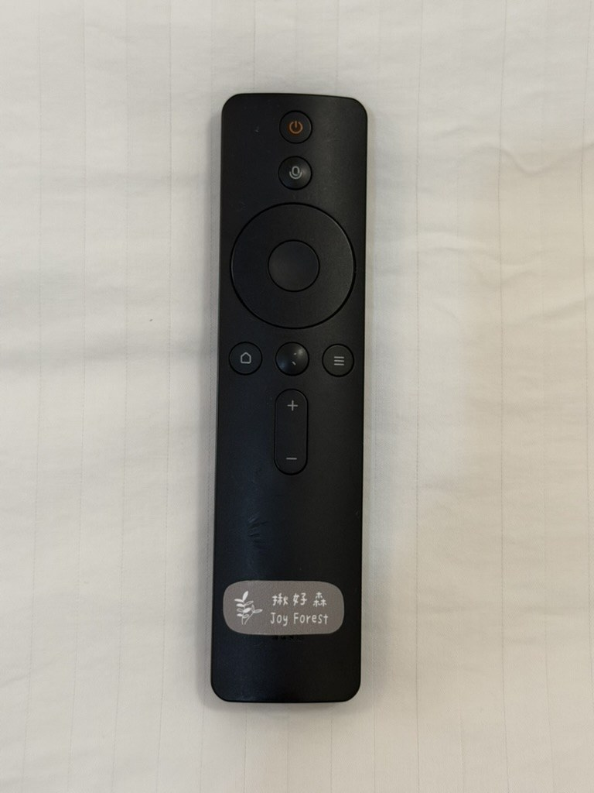
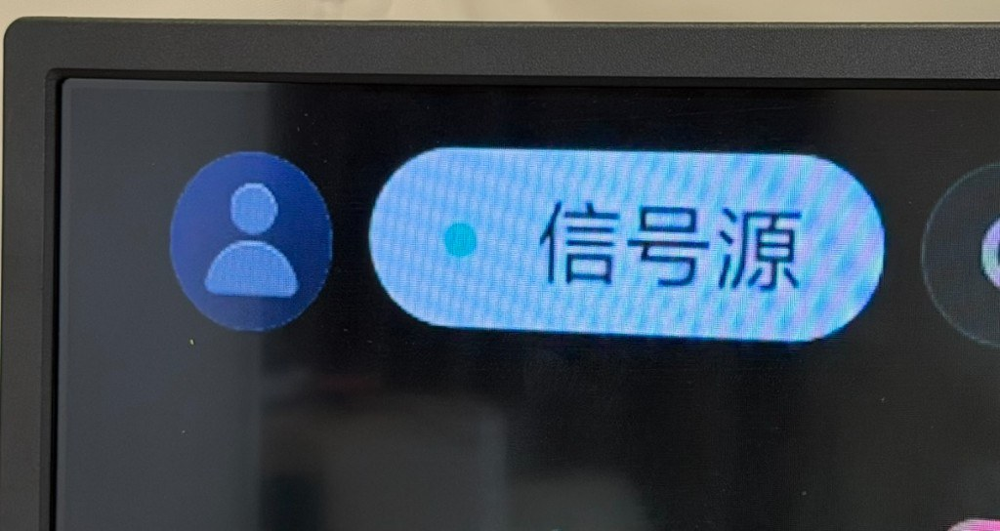
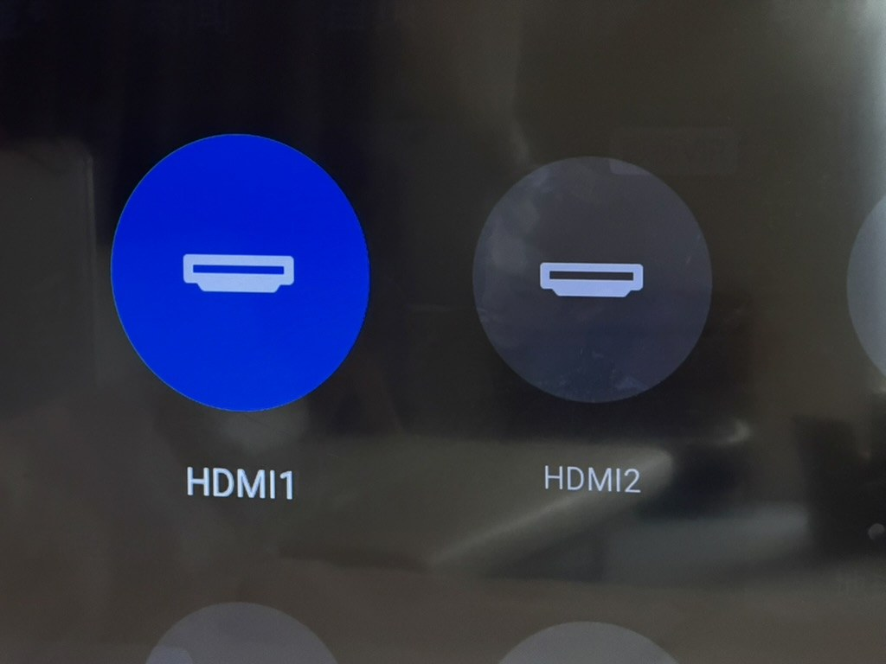
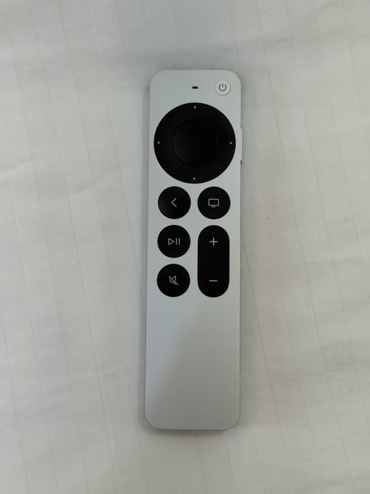
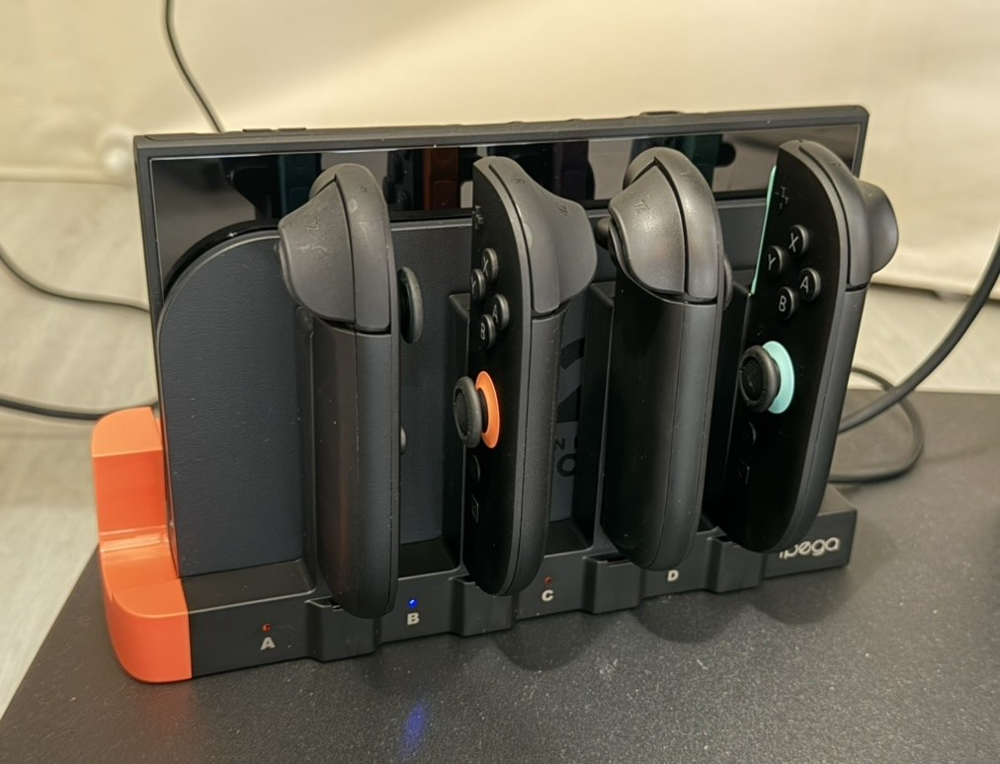
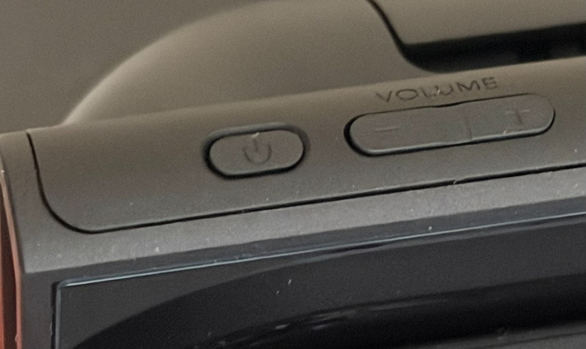
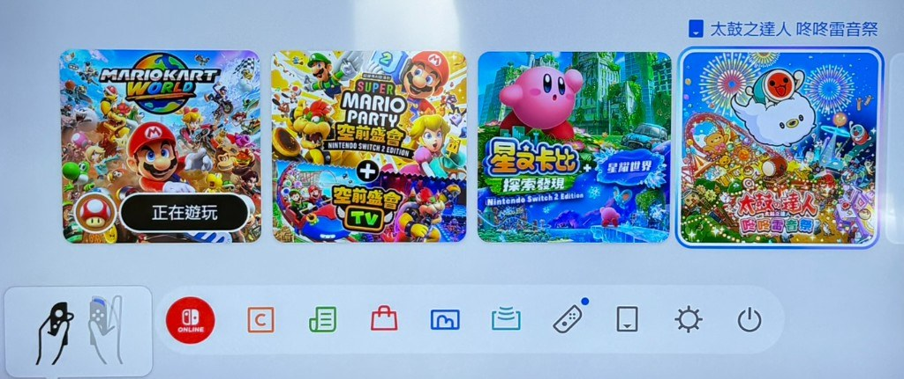

步驟 1｜開啟電視並回到首頁
請使用黑色電視遙控器。畫面未開啟時先按最上方的橘色電源鍵；接著按遙控器上的「房子」圖案回到首頁。方向鍵與中間確認鍵用來選擇訊號源與 HDMI。
快速記住：HDMI 1 是 Apple TV、HDMI 2 是 Switch 2、HDMI 3 是 KTV。若電視沒有自動偵測設備，請用黑色電視遙控器按「房子」圖案回到首頁，再進入「訊號源」選擇。

請使用黑色電視遙控器。畫面未開啟時先按最上方的橘色電源鍵；接著按遙控器上的「房子」圖案回到首頁。方向鍵與中間確認鍵用來選擇訊號源與 HDMI。

按「房子」圖案回到首頁後，使用方向鍵找到「訊號源」（畫面上可能顯示為「信号源」），按中間確認鍵進入。

用電視遙控器左右移動，按中間確認鍵即可切換。

當訊號源選在 HDMI 1 時，請改用銀色的 Apple TV 遙控器操作。上方圓形觸控板可移動游標與確認，下方有返回、音量等按鍵。

先將電視訊號源切到 HDMI 2。Switch 主機放在充電／手把底座上，手把可直接取下使用。

請按 Switch 機身角落的電源鍵（圖中標示電源符號的按鍵）即可喚醒／開啟主機。開機後電視畫面會出現 Switch 主畫面。

遊戲都已儲存在 Switch 主機裡，進入主畫面後點選想玩的遊戲即可，不必另外下載。常見如瑪利歐賽車、瑪利歐派對、星之卡比、太鼓之達人等，可依主機畫面實際顯示為準。
音響與麥克風操作請參考 卡拉OK使用說明。